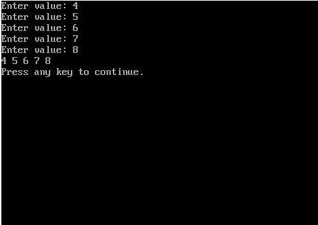
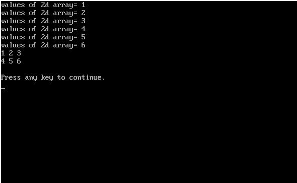

#include#include #include void main() { int a[5],i; int *f; clrscr(); f=a; for(i=0;i<5;i++) { printf("Enter value: "); scanf("%d",f+i); } for(i=0;i<5;i++) { printf("%d ",*(f+i)); } delay(5000); }

#include#include #include void main() { int a[2][3],i,j; int (*f)[3]; clrscr(); f=a; for(i=0;i<2;i++) { for(j=0;j<3;j++) { printf("values of 2d array= "); scanf("%d",&f[i][j]); } } for(i=0;i<2;i++) { for(j=0;j<3;j++) { printf("%d ",f[i][j]); } printf("\n"); } delay(5000); }
